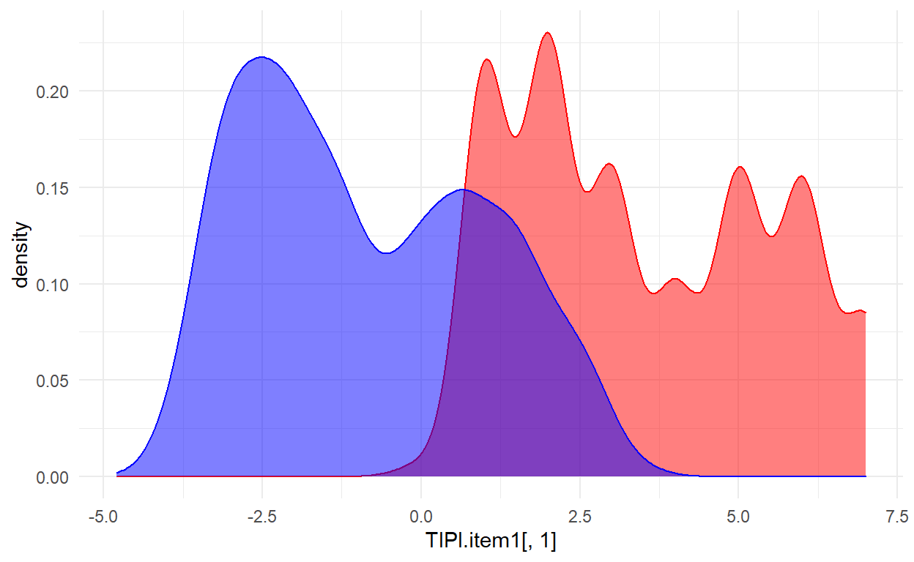

Demonstration of how to write a function with personality research data.
This is a tutorial on using functional programming to solve specific problems in research. This tutorial addresses the issue of Ipsatization which consists of methods of data transformation used in Personality Psychology and Social Psychology research. Ipsatization transforms each participant’s ratings relative to their average response such that the total and the average of the participant’s scores across all items in the dataset are zero (or another constant for all people) (Greer and Dunlap, 1997).
Packages such as multicon have built functions like ipsatize() which enable standardizing rows of the dataframes being studied. However it does not address the various types of ipsative scorings available for carrying out different transformations.
An important aspect of using data transformations involves understanding the relationship between raw data and transformed data. The purpose of the function built here will be to address this specific issue.
Before we get started, we need to load the libraries necessary to complete this tutorial. Loading the entire library may not be always necessary, especially if you intend to use it only once. This will be the case for rio, here, and knitr in this tutorial, so you may choose not to load them here if you’d like.
For this tutorial, we will be working with a dataset containing the Ten Item Personality Inventory (TIPI; Gosling, S. D., Rentfrow, P. J., & Swann, W. B., Jr., 2003). This is a brief measure of the Big Five Personality Domains (Goldberg, 1993).!!!!!info about N and what variables are called etc!!!!!!
The TIPI items were rated “I see myself as:” _____ such that !!!!format and edit next!!!!!! 1 = Disagree strongly 2 = Disagree moderately 3 = Disagree a little 4 = Neither agree nor disagree 5 = Agree a little 6 = Agree moderately 7 = Agree strongly
When importing data, two important things to keep in mind are your working directory and reproducibility. Where you save your files can impact the ease at which you can call them; you’ll have the best luck saving data files of interest within the corresponding R Project. rio’s import() function provides an easy method for importing data files, including the ability to set the class of the data to tibble, which helps to retain the data in a format which is more amenable to data manipulation in tidyverse. To enhance reproducibility across different devices, we’ll use the here() function within the here package when specifying our file path.
For the current project, we’ll only be working with the TIPI items, so to simplify the dataframe we’re using, we can select only those columns.
# Select desired variables
data <- df_tipi %>%
select(TIPI1:TIPI10)
Now we can take a look at the data we’ll be working with. The kable() function from the knitr package helps to format the data into a table, and we can specify that the table should contain 5 rows.
[1] "| TIPI1| TIPI2| TIPI3| TIPI4| TIPI5| TIPI6| TIPI7| TIPI8| TIPI9| TIPI10|"
[2] "|-----:|-----:|-----:|-----:|-----:|-----:|-----:|-----:|-----:|------:|"
[3] "| 5| 3| 6| 2| 6| 6| 7| 2| 7| 1|"
[4] "| 6| 7| 6| 7| 6| 3| 7| 5| 1| 1|"
[5] "| 6| 6| 6| 1| 7| 5| 6| 5| 7| 7|"| TIPI1 | TIPI2 | TIPI3 | TIPI4 | TIPI5 | TIPI6 | TIPI7 | TIPI8 | TIPI9 | TIPI10 |
|---|---|---|---|---|---|---|---|---|---|
| 5 | 3 | 6 | 2 | 6 | 6 | 7 | 2 | 7 | 1 |
| 6 | 7 | 6 | 7 | 6 | 3 | 7 | 5 | 1 | 1 |
| 6 | 6 | 6 | 1 | 7 | 5 | 6 | 5 | 7 | 7 |
| 6 | 7 | 7 | 5 | 7 | 6 | 5 | 1 | 5 | 1 |
| 1 | 3 | 7 | 2 | 6 | 4 | 5 | 5 | 5 | 3 |
| 4 | 2 | 6 | 2 | 6 | 5 | 6 | 3 | 6 | 2 |
With the libraries loaded and data imported, we can now begin building our function.
There are several ways in which one could go about building functions. The approach outlined here should be viewed as one of the several approaches to go about building functions.
As you think about building a function, keep in mind the purpose of why you set to build a function in the first place. Your function will ideally solve a problem specific to your analysis or can also be used by others to carry out their analyses.
Let’s state the problem first - The difference between raw and ipsatized data has been studied to some extent leading to several debates amongst researchers questioning the utility of these methods. It is therefore important to look at correlations between the raw and ipsatized data.
Now, that we understand the problem let’s think about how our function could address this problem. Here are a sequence of questions which will help you think about the function you intend to build.
Step 1 - What should my output look like?
Here we are looking for an output which is a list consisting of raw and transformed or ipsatized data.
ipsatize.MeanDev(dataframe)
>list
$raw...
$ipsatize...Step 2 - What is the broad outline for obtaining this output?
We can build a function for ipsatizing the data and one for then putting the ipsatized data with the raw data within a larger list. Great we have a broad plan! Let’s break this down further.
Step 3 - How do we build the functions specified in step 2?
We will focus on one function at a time. We are going to first build the ipsatize function. Let’s break down the ipsatize function
i. What is the \(name\) of the function?
We will call it ipsatize.MeanDev as the type of ipsatization this function will perform is Mean deviation.
ii. What will the the function $do$ ?
It will compute the means of the rows and subtract the mean from every score in the respective rows. In order to do this we will need an id column to calculate means for every row. This is slightly tricky but will be clear as we go along.
A good way of thinking about writing functions is to start with the data. We will try and add an id column to the data.
We can use the row_number within mutate to create a new column.
[1] "| TIPI1| TIPI2| TIPI3| TIPI4| TIPI5| TIPI6| TIPI7| TIPI8| TIPI9| TIPI10| id|"
[2] "|-----:|-----:|-----:|-----:|-----:|-----:|-----:|-----:|-----:|------:|----:|"
[3] "| 5| 3| 6| 2| 6| 6| 7| 2| 7| 1| 1|"
[4] "| 6| 7| 6| 7| 6| 3| 7| 5| 1| 1| 2|"
[5] "| 6| 6| 6| 1| 7| 5| 6| 5| 7| 7| 3|"That works! Now let’s wrap this within a function. We will call it add_id
add_id <- function(df) {
df_id <- df %>%
mutate(id = row_number())
df_id
}
Now let’s check if it works.
[1] "| TIPI1| TIPI2| TIPI3| TIPI4| TIPI5| TIPI6| TIPI7| TIPI8| TIPI9| TIPI10| id|"
[2] "|-----:|-----:|-----:|-----:|-----:|-----:|-----:|-----:|-----:|------:|----:|"
[3] "| 5| 3| 6| 2| 6| 6| 7| 2| 7| 1| 1|"
[4] "| 6| 7| 6| 7| 6| 3| 7| 5| 1| 1| 2|"
[5] "| 6| 6| 6| 1| 7| 5| 6| 5| 7| 7| 3|"Perfect! Now the next part is figuring out how to add a column with the mean rows. One way of thinking about this is we have a id variable which can be used to group the data. We can then use pivot_longer and pivot_wider to format the data.
data %>%
add_id() %>%
pivot_longer(cols = !id, names_to = "col_names")
# A tibble: 24,950 x 3
id col_names value
<int> <chr> <int>
1 1 TIPI1 5
2 1 TIPI2 3
3 1 TIPI3 6
4 1 TIPI4 2
5 1 TIPI5 6
6 1 TIPI6 6
7 1 TIPI7 7
8 1 TIPI8 2
9 1 TIPI9 7
10 1 TIPI10 1
# ... with 24,940 more rowsWe have a 10 rows (equal to 10 variables) dedicated to every row id in this dataframe. We can use group_by to compute the means within every group and find deviations for every score from the mean.
data %>%
add_id() %>%
pivot_longer(cols = !id, names_to = "col_names") %>%
group_by(id) %>%
mutate(means_rowwise = mean(value, na.rm = T),
value = value - means_rowwise)
# A tibble: 24,950 x 4
# Groups: id [2,495]
id col_names value means_rowwise
<int> <chr> <dbl> <dbl>
1 1 TIPI1 0.5 4.5
2 1 TIPI2 -1.5 4.5
3 1 TIPI3 1.5 4.5
4 1 TIPI4 -2.5 4.5
5 1 TIPI5 1.5 4.5
6 1 TIPI6 1.5 4.5
7 1 TIPI7 2.5 4.5
8 1 TIPI8 -2.5 4.5
9 1 TIPI9 2.5 4.5
10 1 TIPI10 -3.5 4.5
# ... with 24,940 more rowsNow, we can use pivot_wider for reformatting the data to how it looked before.
data %>%
add_id() %>%
pivot_longer(cols = !id, names_to = "col_names") %>%
group_by(id) %>%
mutate(means_rowwise = mean(value, na.rm = T),
value = value - means_rowwise) %>%
pivot_wider(names_from = col_names, values_from = value) %>%
select(id, !means_rowwise) %>%
ungroup()
# A tibble: 2,495 x 11
id TIPI1 TIPI2 TIPI3 TIPI4 TIPI5 TIPI6 TIPI7 TIPI8 TIPI9
<int> <dbl> <dbl> <dbl> <dbl> <dbl> <dbl> <dbl> <dbl> <dbl>
1 1 0.5 -1.5 1.5 -2.5 1.5 1.5 2.5 -2.5 2.5
2 2 1.1 2.1 1.1 2.1 1.1 -1.9 2.1 0.100 -3.9
3 3 0.400 0.400 0.400 -4.6 1.4 -0.600 0.400 -0.600 1.4
4 4 1 2 2 0 2 1 0 -4 0
5 5 -3.1 -1.1 2.9 -2.1 1.9 -0.100 0.9 0.9 0.9
6 6 -0.200 -2.2 1.8 -2.2 1.8 0.8 1.8 -1.2 1.8
7 7 -1.9 1.1 0.100 -1.9 1.1 2.1 -1.9 -0.9 1.1
8 8 -0.200 0.8 1.8 -2.2 2.8 -0.200 0.8 0.8 -1.2
9 9 -0.300 0.7 1.7 -2.3 -0.300 0.7 1.7 -2.3 2.7
10 10 -3.5 1.5 -1.5 -3.5 0.5 2.5 1.5 0.5 2.5
# ... with 2,485 more rows, and 1 more variable: TIPI10 <dbl>Now we can wrap this into a function
ipsatize.MD <- function(df){
dfid <- df %>%
add_id()
output <- dfid %>%
pivot_longer(cols = !id, names_to = "col_names") %>%
group_by(id) %>%
mutate(means_rowwise = mean(value, na.rm = T),
value = value - means_rowwise) %>%
pivot_wider(names_from = col_names, values_from = value) %>%
select(id, !means_rowwise) %>%
ungroup()
output
}
ipsatize.MD(data)
# A tibble: 2,495 x 11
id TIPI1 TIPI2 TIPI3 TIPI4 TIPI5 TIPI6 TIPI7 TIPI8 TIPI9
<int> <dbl> <dbl> <dbl> <dbl> <dbl> <dbl> <dbl> <dbl> <dbl>
1 1 0.5 -1.5 1.5 -2.5 1.5 1.5 2.5 -2.5 2.5
2 2 1.1 2.1 1.1 2.1 1.1 -1.9 2.1 0.100 -3.9
3 3 0.400 0.400 0.400 -4.6 1.4 -0.600 0.400 -0.600 1.4
4 4 1 2 2 0 2 1 0 -4 0
5 5 -3.1 -1.1 2.9 -2.1 1.9 -0.100 0.9 0.9 0.9
6 6 -0.200 -2.2 1.8 -2.2 1.8 0.8 1.8 -1.2 1.8
7 7 -1.9 1.1 0.100 -1.9 1.1 2.1 -1.9 -0.9 1.1
8 8 -0.200 0.8 1.8 -2.2 2.8 -0.200 0.8 0.8 -1.2
9 9 -0.300 0.7 1.7 -2.3 -0.300 0.7 1.7 -2.3 2.7
10 10 -3.5 1.5 -1.5 -3.5 0.5 2.5 1.5 0.5 2.5
# ... with 2,485 more rows, and 1 more variable: TIPI10 <dbl>This works! We can add constraints to which type of variables can be added in the dataframe. For this we can build a function which only selects numeric columns.
In the above function, we specify that if the sum of all possible numeric columns in a dataframe is 0, we stop the loop and throw an error message else return the dataframe. This will ensure that all the columns in the dataframe we are working with are numeric. We are using map_lgl from the purrr package which maps the is.numeric function to every column in th edataframe.
Let’s give this function a try. We know that the dataframe “data” has all columns of class numeric whereas “df_tipi” does not.
This works!
Now we can add this to the main function.
ipsatize.MD <- function(df){
df_clean <- df %>%
just_num() %>%
add_id()
output <- df_clean %>%
pivot_longer(cols = !id, names_to = "col_names") %>%
group_by(id) %>%
mutate(means_rowwise = mean(value, na.rm = T),
value = value - means_rowwise) %>%
pivot_wider(names_from = col_names, values_from = value) %>%
select(id, !means_rowwise) %>%
ungroup() %>%
select(-id)
output
}
ipsatize.MD(data)
# A tibble: 2,495 x 10
TIPI1 TIPI2 TIPI3 TIPI4 TIPI5 TIPI6 TIPI7 TIPI8 TIPI9 TIPI10
<dbl> <dbl> <dbl> <dbl> <dbl> <dbl> <dbl> <dbl> <dbl> <dbl>
1 0.5 -1.5 1.5 -2.5 1.5 1.5 2.5 -2.5 2.5 -3.5
2 1.1 2.1 1.1 2.1 1.1 -1.9 2.1 0.100 -3.9 -3.9
3 0.400 0.400 0.400 -4.6 1.4 -0.600 0.400 -0.600 1.4 1.4
4 1 2 2 0 2 1 0 -4 0 -4
5 -3.1 -1.1 2.9 -2.1 1.9 -0.100 0.9 0.9 0.9 -1.1
6 -0.200 -2.2 1.8 -2.2 1.8 0.8 1.8 -1.2 1.8 -2.2
7 -1.9 1.1 0.100 -1.9 1.1 2.1 -1.9 -0.9 1.1 1.1
8 -0.200 0.8 1.8 -2.2 2.8 -0.200 0.8 0.8 -1.2 -3.2
9 -0.300 0.7 1.7 -2.3 -0.300 0.7 1.7 -2.3 2.7 -2.3
10 -3.5 1.5 -1.5 -3.5 0.5 2.5 1.5 0.5 2.5 -0.5
# ... with 2,485 more rowsA closer look will tell you that we could benefit from renaming the column names of the ips dataframe within the list. The paste function can be helpful to do this.
rename_ips = function(ipsatized_data){
names(ipsatized_data) <- paste0(names(ipsatized_data), "_ips")
return(ipsatized_data)
}
rename_ips(ipsatize.MD(data))
# A tibble: 2,495 x 10
TIPI1_ips TIPI2_ips TIPI3_ips TIPI4_ips TIPI5_ips TIPI6_ips
<dbl> <dbl> <dbl> <dbl> <dbl> <dbl>
1 0.5 -1.5 1.5 -2.5 1.5 1.5
2 1.1 2.1 1.1 2.1 1.1 -1.9
3 0.400 0.400 0.400 -4.6 1.4 -0.600
4 1 2 2 0 2 1
5 -3.1 -1.1 2.9 -2.1 1.9 -0.100
6 -0.200 -2.2 1.8 -2.2 1.8 0.8
7 -1.9 1.1 0.100 -1.9 1.1 2.1
8 -0.200 0.8 1.8 -2.2 2.8 -0.200
9 -0.300 0.7 1.7 -2.3 -0.300 0.7
10 -3.5 1.5 -1.5 -3.5 0.5 2.5
# ... with 2,485 more rows, and 4 more variables: TIPI7_ips <dbl>,
# TIPI8_ips <dbl>, TIPI9_ips <dbl>, TIPI10_ips <dbl>All we need to do now is wrap up the ipsatized data and raw data within a list.
ipsatize.MeanDev = function(set){
l <- list("ips" = rename_ips(ipsatize.MD(data)) , "raw" = data,
"correlation.matrix" = cor(rename_ips(ipsatize.MD(data)), data))
l
}
(ips.raw.data = ipsatize.MeanDev(data))
$ips
# A tibble: 2,495 x 10
TIPI1_ips TIPI2_ips TIPI3_ips TIPI4_ips TIPI5_ips TIPI6_ips
<dbl> <dbl> <dbl> <dbl> <dbl> <dbl>
1 0.5 -1.5 1.5 -2.5 1.5 1.5
2 1.1 2.1 1.1 2.1 1.1 -1.9
3 0.400 0.400 0.400 -4.6 1.4 -0.600
4 1 2 2 0 2 1
5 -3.1 -1.1 2.9 -2.1 1.9 -0.100
6 -0.200 -2.2 1.8 -2.2 1.8 0.8
7 -1.9 1.1 0.100 -1.9 1.1 2.1
8 -0.200 0.8 1.8 -2.2 2.8 -0.200
9 -0.300 0.7 1.7 -2.3 -0.300 0.7
10 -3.5 1.5 -1.5 -3.5 0.5 2.5
# ... with 2,485 more rows, and 4 more variables: TIPI7_ips <dbl>,
# TIPI8_ips <dbl>, TIPI9_ips <dbl>, TIPI10_ips <dbl>
$raw
# A tibble: 2,495 x 10
TIPI1 TIPI2 TIPI3 TIPI4 TIPI5 TIPI6 TIPI7 TIPI8 TIPI9 TIPI10
<int> <int> <int> <int> <int> <int> <int> <int> <int> <int>
1 5 3 6 2 6 6 7 2 7 1
2 6 7 6 7 6 3 7 5 1 1
3 6 6 6 1 7 5 6 5 7 7
4 6 7 7 5 7 6 5 1 5 1
5 1 3 7 2 6 4 5 5 5 3
6 4 2 6 2 6 5 6 3 6 2
7 2 5 4 2 5 6 2 3 5 5
8 4 5 6 2 7 4 5 5 3 1
9 4 5 6 2 4 5 6 2 7 2
10 1 6 3 1 5 7 6 5 7 4
# ... with 2,485 more rows
$correlation.matrix
TIPI1 TIPI2 TIPI3 TIPI4
TIPI1_ips 0.95997515 -0.11340834 0.031167709 -0.244068520
TIPI2_ips -0.12071784 0.95428074 -0.167224238 0.148187176
TIPI3_ips 0.02535938 -0.16688353 0.948872899 -0.298764735
TIPI4_ips -0.25970548 0.12817941 -0.307516250 0.962139678
TIPI5_ips 0.15867518 -0.13509164 -0.005073157 -0.256663167
TIPI6_ips -0.68318241 -0.07328539 -0.024670231 0.073760081
TIPI7_ips 0.19604318 -0.39102208 0.007475973 -0.008942264
TIPI8_ips -0.09883568 0.05362126 -0.550478491 0.158821663
TIPI9_ips 0.06676858 -0.27632275 0.268938383 -0.690397982
TIPI10_ips -0.22041641 -0.06129857 -0.108530999 -0.002177791
TIPI5 TIPI6 TIPI7 TIPI8
TIPI1_ips 0.173616771 -0.666541441 0.17044573 -0.08266381
TIPI2_ips -0.120651089 -0.038939637 -0.40327991 0.06565301
TIPI3_ips 0.008668343 0.015568018 -0.02008034 -0.54989652
TIPI4_ips -0.255068624 0.091005873 -0.05008496 0.15131155
TIPI5_ips 0.919218995 -0.203227013 0.02418945 -0.02356731
TIPI6_ips -0.227006085 0.953180313 -0.21528145 -0.08954131
TIPI7_ips 0.073692208 -0.162399055 0.94923204 -0.08558253
TIPI8_ips -0.027066263 -0.067303304 -0.11907202 0.95695523
TIPI9_ips 0.065543427 -0.009290563 -0.02889303 -0.33029253
TIPI10_ips -0.376767840 0.040201343 -0.22884271 -0.10619799
TIPI9 TIPI10
TIPI1_ips 0.09172718 -0.187414036
TIPI2_ips -0.26483551 -0.031356832
TIPI3_ips 0.29771049 -0.076414836
TIPI4_ips -0.68790076 0.007123348
TIPI5_ips 0.08228079 -0.365950413
TIPI6_ips -0.02645471 0.029629981
TIPI7_ips 0.01615832 -0.176200329
TIPI8_ips -0.32648284 -0.089488624
TIPI9_ips 0.95761526 -0.057303325
TIPI10_ips -0.06741043 0.941250723So now we have a list with the three dataframes. We can look at the correlations between raw and ipsatized data.
tibble(
diag(ips.raw.data$correlation.matrix), colnames(ips.raw.data$ips), colnames(ips.raw.data$raw)
)
# A tibble: 10 x 3
`diag(ips.raw.data$corre~ `colnames(ips.raw.d~ `colnames(ips.raw.d~
<dbl> <chr> <chr>
1 0.960 TIPI1_ips TIPI1
2 0.954 TIPI2_ips TIPI2
3 0.949 TIPI3_ips TIPI3
4 0.962 TIPI4_ips TIPI4
5 0.919 TIPI5_ips TIPI5
6 0.953 TIPI6_ips TIPI6
7 0.949 TIPI7_ips TIPI7
8 0.957 TIPI8_ips TIPI8
9 0.958 TIPI9_ips TIPI9
10 0.941 TIPI10_ips TIPI10 We can also plot raw and ipsatized data. For example, lets look at the item 1.
TIPI.item1 = data.frame(ips.raw.data$raw$TIPI1, ips.raw.data$ips$TIPI1_ips)
TIPI.item1 %>%
ggplot()+
geom_density(aes(x=TIPI.item1[,1]), colour="red", fill = "red", alpha = .5) +
geom_density(aes(x=TIPI.item1[,2]), colour="blue", fill = "blue", alpha = .5) +
theme_minimal()
